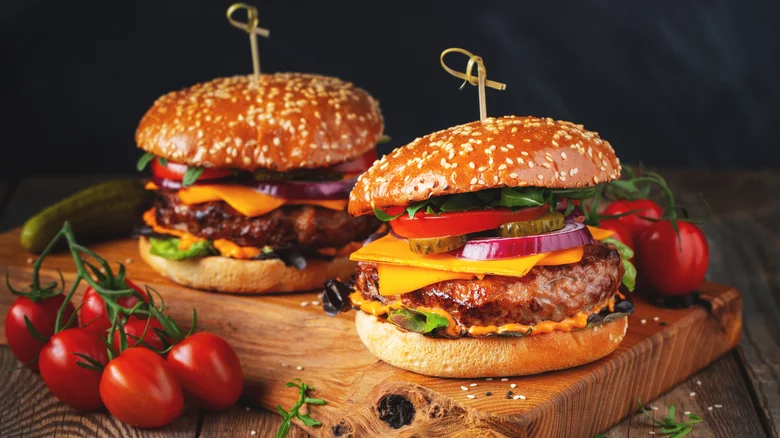

Home
Products
Orders
About
Fantastic burgers
Meat lover
Beef
Pork
Turkey
Vegeterian
Piedone
Steps of order
Choose a burger
Buy it
Give your address
Eat it
What makes restaurant burgers taste diffent?
See it by yourself
